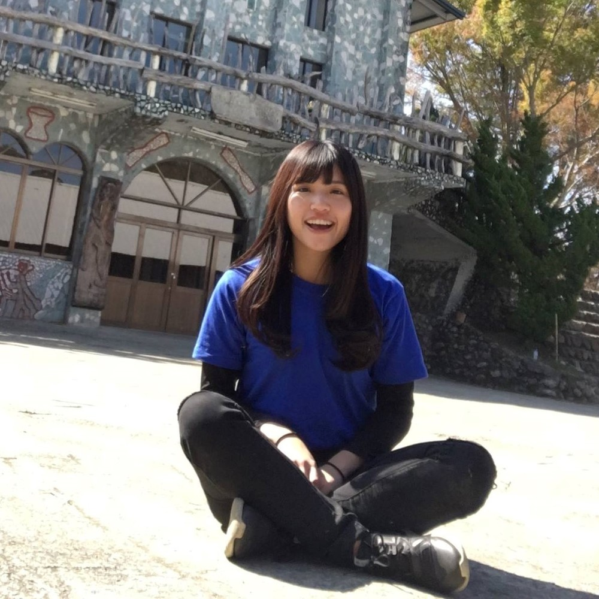

公司職員簡介
姓名 : 柳明慧
職稱 : 2016劇二股員
入社年份 : 2016-2017
特殊表現 : 清大橋本有菜、牛牛專屬十大建設總執行長
員工表現

琪鑒
有菜的演技真的讓人很驚艷，具有爆發力感情豐沛，覺得跟你在劇二很幸運～因為多了很多笑聲！尤其是你跟許孟楷互飆很療癒～一直都很欣賞你很有想法又觀察細膩，祝你未來一切順利！
硬魚
我想當牛牛頭號粉絲(́◉◞౪◟◉‵)
家林
真的是會讀書會玩樂又會化妝的小慧餒> 3< 希望你能幫呈萎實現肚皮蓋皮帶的夢想。你要是欺負呈萎的話沒關係，我不會介意。特別注意一點，他已經答應要給我和你一人一棟房子，期待一下吧~
依潔
原文很愛的part就是冬令和你還有怡sham一起打鬧的時候了，還有一起走回女宿聽你講故事，覺得你是一個很有能力又幽默然後還很美膩的女神姊姊，祝未來一切安好！
珊羽
很正很酷很搞笑的半個工工仔，但我認真覺得你有時候說出來的話總是那麼有力道，是那麼的有智慧。
展
你跟你的肥胖男友都是我在大學時期最好的榜樣，沒開玩笑，真的是太厲害太棒棒了，祝你有個美好的前程
斈恩
明慧畢業快樂！一直覺得你是很厲害很特別的人然後偷偷崇拜你><祝你未來一切順利(包括牛牛的十大建設)，最後告白一下牛牛真的好可愛！